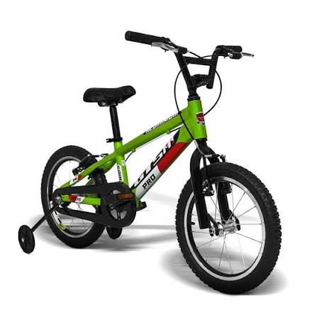
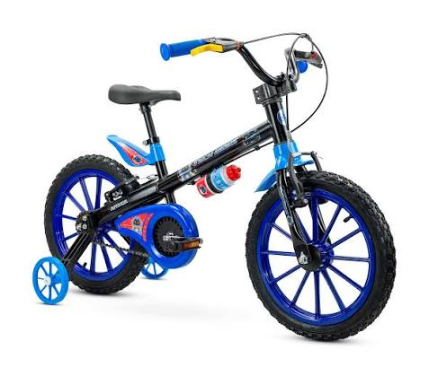
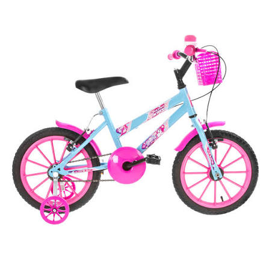
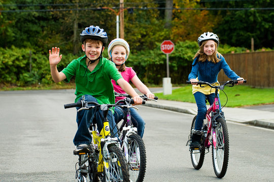
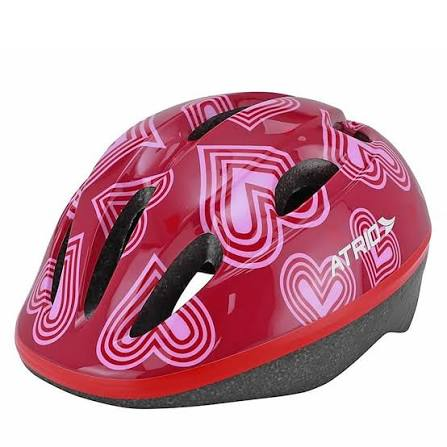
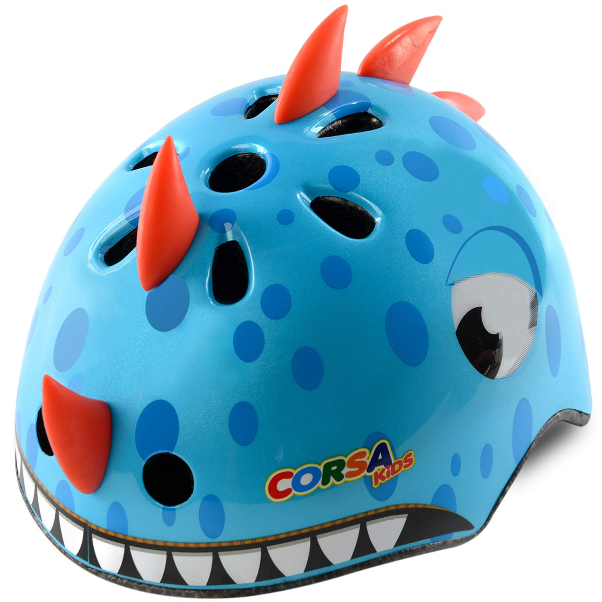
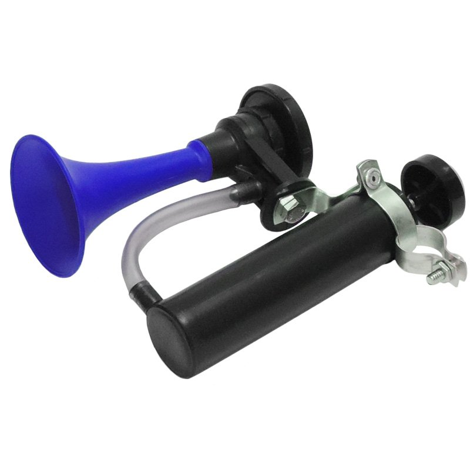
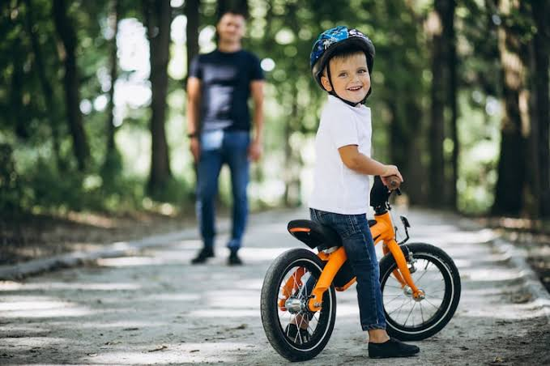
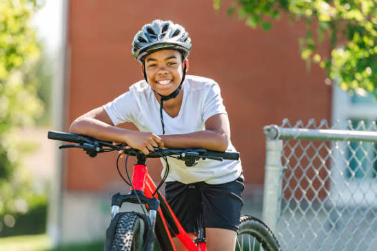

Galeria de Fotos
Conheça a linha completa de bicicletas SoftBike em detalhes e momentos inesquecíveis.









 Fale Conosco
Fale Conosco
Conheça a linha completa de bicicletas SoftBike em detalhes e momentos inesquecíveis.








